03/05/2024 — Sốc đột ngột với một điện tâm đồ trông đáng sợ. Đó là gì?
Bản dịch tiếng Việt của bài "Sudden shock with a Nasty looking ECG. What is it?" – Dr. Smith’s ECG Blog. Giữ nguyên toàn bộ 12 hình ảnh của bản gốc.
Một phụ nữ ngoài 60 tuổi than đau bụng dữ dội đột ngột. Nhân viên cấp cứu ngoài viện thấy bà kích động, tụt huyết áp, vã mồ hôi và trong tình trạng sốc.
Có 2 điện tâm đồ trước viện:

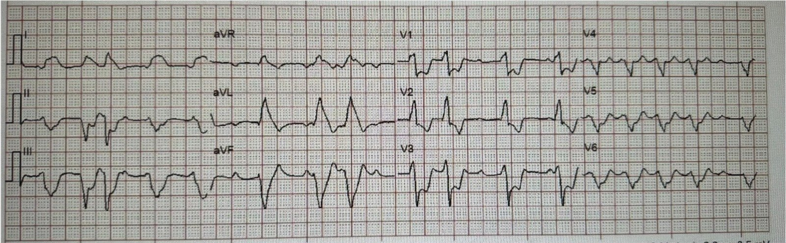
Bạn nghĩ gì?
Smith: Nhịp trên thất chưa xác định kèm PVC. (Xem phân tích của Ken Grauer bên dưới). Có hình ảnh “vây cá mập” (shark fin) ở I và aVL, do sự kết hợp của sóng R lớn vì blốc phân nhánh trái trước (left anterior fascicular block) cộng với ST chênh lên dốc xuống do OMI. Có STD soi gương ở các chuyển đạo dưới. Có sóng R khá lớn ở chuyển đạo V1 và sóng R rất lớn ở V2, gợi ý RBBB không điển hình. Có ST chênh xuống rất lớn khắp các chuyển đạo trước tim. Có STE ở aVR. Như vậy, có OMI bên cao kèm ST chênh xuống lan tỏa.
Khi được cho xem điện tâm đồ này, tôi nói rằng nó trông như thiếu máu cục bộ lan rộng đến mức có thể là tắc thân chung động mạch vành trái (left main), hoặc thiếu máu cục bộ thân chung cộng với tắc động mạch mũ (OMI bên cao và phía sau). Hơn nữa, tắc thân chung trái thường biểu hiện khi bệnh nhân đã cận kề cái chết. Thực tế, đa số không đến được bệnh viện khi còn sống, điều này giải thích vì sao chỉ một tỷ lệ phần trăm rất nhỏ OMI là do tắc hoàn toàn thân chung trái.
Đây là kết quả đọc của Queen of Hearts:

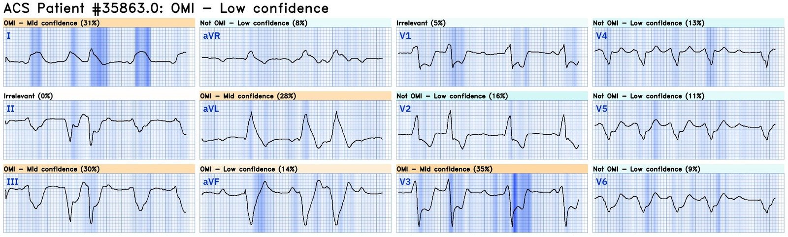
Có điện tâm đồ trước viện thứ hai:

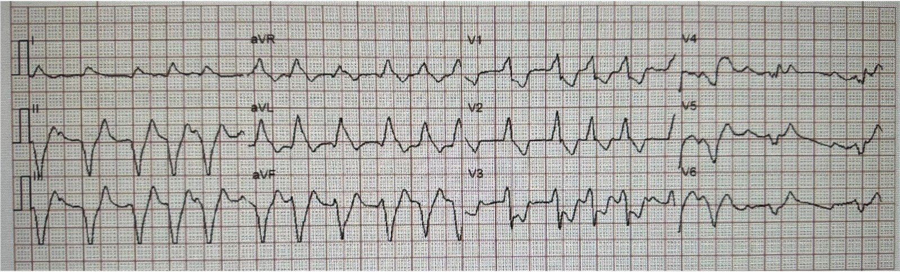
Một lần nữa, nhịp trên thất kèm RBBB và LAFB, hình vây cá mập, và STD tối đa ở V3. OMI phía sau và bên cao.
Nhưng lần này Queen đọc sai (cho rằng không phải OMI):

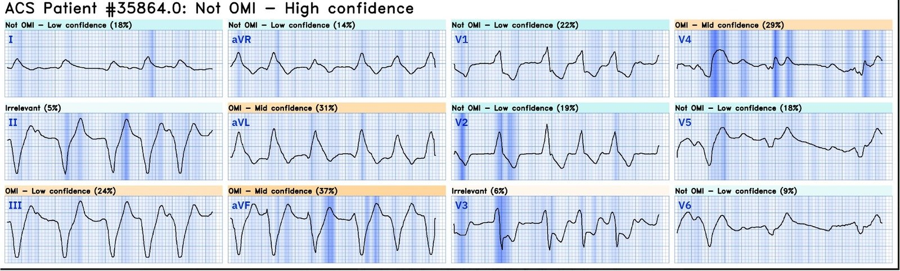
Có những loạt VT:

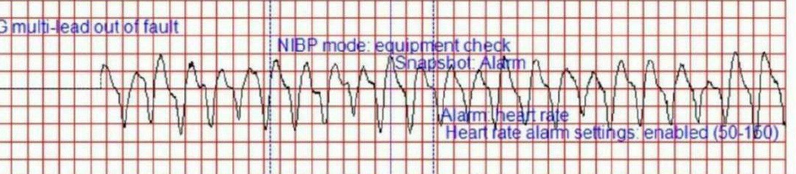

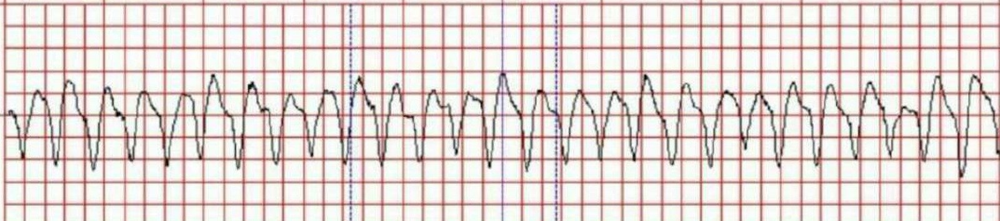
Bệnh nhân đến viện trong tình trạng sốc nặng và được ghi điện tâm đồ tại ED:

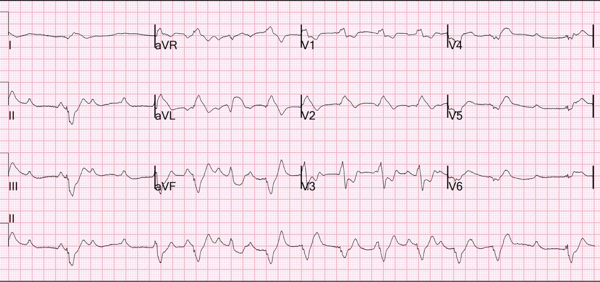
Lúc này có sự tiến triển, gồm cả ST chênh lên (thay vì ST chênh xuống) ở V4-V6. Điều này gợi ý huyết khối đã lan rộng gây tắc LAD bên cạnh động mạch mũ.
Có thể khó nhận ra ST chênh lên và chênh xuống khi có RBBB.
–Việc tìm điểm kết thúc QRS sẽ giúp ích.
–Việc này dễ làm nhất ở chuyển đạo V1.
–Sau đó bạn có thể kẻ một đường thẳng xuống qua các chuyển đạo V2 và V3 tới dải nhịp chuyển đạo II ở phía dưới cùng.
–Sau đó bạn có thể tìm cùng vị trí đó trên QRS trong mỗi khoảng 2,5 giây.
–Sau đó bạn có thể kẻ đường thẳng lên tới từng chuyển đạo I, II, III; rồi aVR, aVL, aVF; rồi V4, V5,V6.

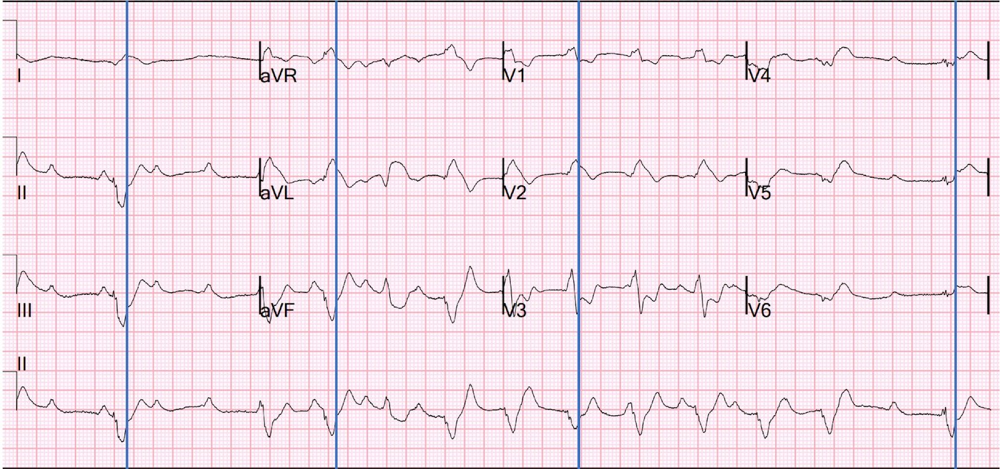
Ở đây Queen of Hearts đọc đúng:

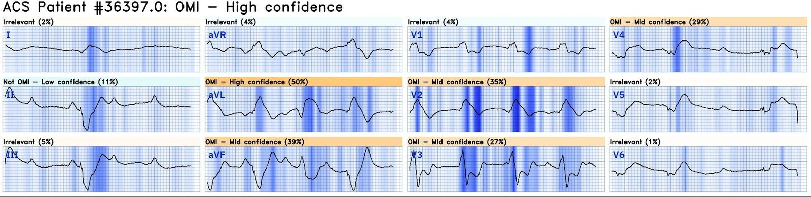
Đăng ký để được truy cập Queen of Hearts tại đây
Bác sĩ can thiệp cho biết ông không thể làm thủ thuật trong khi huyết áp tâm thu của bệnh nhân là 45.
Vì vậy, bệnh nhân được đặt ECMO động-tĩnh mạch.
Sau đó tiến hành chụp mạch vành.
Có tắc 100% thân chung động mạch vành trái (OMI). Động mạch được mở thông và có huyết khối trong động mạch mũ và LAD.
Đáng tiếc, cuối cùng bệnh nhân đã tử vong.
Những điểm cần học:
1. RBBB + LAFB trong bối cảnh ACS là rất xấu. Một số bệnh nhân có sẵn RBBB kèm LAFB trên điện tâm đồ nền, nhưng ở bệnh nhân có khả năng ACS, các dấu hiệu này liên quan đến nhồi máu nặng kèm ngừng tim, sốc tim hoặc sắp sốc.
2. Bệnh nhân ACS kèm RBBB/LAFB thường có tổn thương thân chung trái hoặc LAD đoạn gần.
Đây là một số ca RBBB kèm LAFB:
What is the Diagnosis in this 70-something with Chest Pain? (Chẩn đoán là gì ở bệnh nhân ngoài 70 tuổi bị đau ngực này?)
3. ACS thân chung trái không tắc biểu hiện bằng ST chênh xuống lan tỏa và STE ở aVR. Tắc hoàn toàn thân chung trái biểu hiện bằng các dấu hiệu điện tâm đồ khác, rất đa dạng.
Xem sự đa dạng của điện tâm đồ tắc thân chung trái tại đây:
How does Acute Total Left Main Coronary occlusion present on the ECG? (Tắc hoàn toàn cấp thân chung động mạch vành trái biểu hiện thế nào trên điện tâm đồ?)

===================================
BÌNH LUẬN CỦA TÔI, bởi KEN GRAUER, MD (3/5/2024):
===================================
Đa số bệnh nhân tắc cấp thân chung động mạch vành trái không sống sót được đến bệnh viện. Bệnh nhân hôm nay đã đến được bệnh viện — nhưng trong tình trạng sốc tim, và dù đã được nỗ lực điều trị hết sức, bà vẫn tử vong ngay sau đó.
- Tôi tập trung bình luận vào một số Điểm cần học bổ sung cho những điểm mà BS. Smith đã nêu bật.
Các dấu hiệu điện tâm đồ khi tắc cấp thân chung trái:
Như BS. Smith đã nói — các dấu hiệu điện tâm đồ của tắc hoàn toàn cấp thân chung trái rất đa dạng. Trong Hình 1 — tôi trình bày lại các điểm chính mà tôi đã tóm tắt từ bài đăng ngày 9 tháng Tám năm 2019 của BS. Smith về chủ đề này. Những Điều cần nhớ MẤU CHỐT như sau:
- Không có biểu hiện điện tâm đồ “duy nhất” nào ở bệnh nhân tắc cấp thân chung trái. Theo đúng nghĩa đen — Bạn có thể thấy hầu như bất cứ điều gì!
- Lý do của biểu hiện điện tâm đồ rất thay đổi này là nhiều vùng có thể bị ảnh hưởng ở những mức độ khác nhau — khiến không thể dự đoán bạn sẽ thấy bao nhiêu ST chênh lên — và ST chênh xuống đối nghịch (soi gương) sẽ làm giảm bớt (nếu không triệt tiêu hoàn toàn) các lực vectơ đoạn ST ban đầu này đến mức nào.
- Hình dạng ST-T ở chuyển đạo aVR có thể là bất cứ thứ gì khi có tắc cấp thân chung trái.

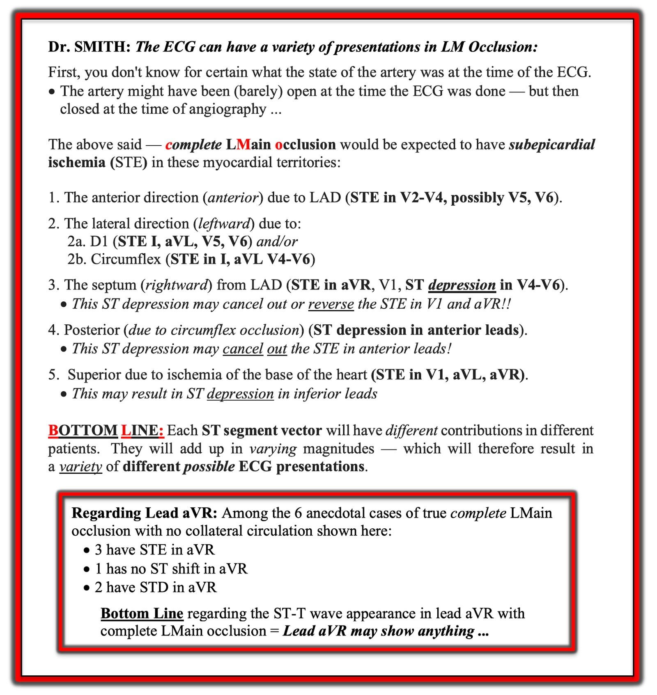
ST chênh lên và chênh xuống “vây cá mập”
Như BS. Smith đã nói — cả 3 điện tâm đồ 12 chuyển đạo trong ca hôm nay đều cho thấy độ lệch đoạn ST “vây cá mập“ (shark fin) rõ rệt.
- Trong phần bàn luận, BS. Smith minh họa ranh giới giữa điểm kết thúc QRS và điểm bắt đầu đoạn ST cho điện tâm đồ đầu tiên ghi tại ED.
- Để rõ ràng hơn, trong Hình 2 — tôi minh họa điểm ranh giới này cho điện tâm đồ #1 (tức là điện tâm đồ đầu tiên của EMS) — theo đó mọi thứ ở bên phải các đường ĐỎ thẳng đứng mà tôi đã kẻ trên điện tâm đồ #1 đều biểu thị hoặc ST chênh lên rõ rệt (ở các chuyển đạo I,aVL và aVR) — hoặc ST chênh xuống rõ rệt (ở các chuyển đạo II,III,aVF; V1,V2,V3; V5,V6).
LƯU Ý: Với những ai muốn luyện tập thêm cách nhận ra thay đổi ST-T vây cá mập — chúng tôi đã trình bày các ca thuộc thực thể này trong các bài ECG Blog sau (cùng nhiều bài khác):
- Trong bài đăng ngày 11 tháng Sáu năm 2018 —
- Trong bài đăng ngày 4 tháng Mười năm 2019 —
- Trong bài đăng ngày 22 tháng Mười Một năm 2019 —
- Trong bài đăng ngày 24 tháng Một năm 2020 —
- Trong bài đăng ngày 16 tháng Hai năm 2020 —
- Trong bài đăng ngày 25 tháng Tư năm 2020 —
- Trong bài đăng ngày 19 tháng Năm năm 2020 —
- Trong bài đăng ngày 27 tháng Chín năm 2023 —
=====================================
Nhịp là gì trong ca hôm nay?
Việc xác định nhịp tim trong ca hôm nay không chỉ có ý nghĩa học thuật — vì ấn tượng “liếc nhanh” ban đầu của tôi với các điện tâm đồ của người phụ nữ ngoài 60 tuổi đến viện trong tình trạng sốc này — là QRS trông rộng với nhịp không đều, có thể là một VT đa dạng.
- Xem kỹ hơn — tôi nhận ra hình dạng vây cá mập (mà tôi minh họa bằng các đường ĐỎ thẳng đứng trên điện tâm đồ #1 của Hình 2).
Vậy tiếp cận nhịp trong điện tâm đồ #1 như thế nào?
- XIN NHẤN MẠNH: Ban đầu tôi đánh giá nhịp chỉ dựa trên điện tâm đồ #1 — như tôi luôn cố gắng làm, “tự đặt mình vào đúng vị trí của nhân viên y tế tại hiện trường — những người ban đầu chỉ thấy điện tâm đồ #1″.
- Như BS. Smith đã nhận xét — việc nhận ra hình dạng vây cá mập cho chúng ta biết nhịp có vẻ rộng và không đều trong Hình 1 gần như chắc chắn là nhịp trên thất!
- Dù các phức bộ QRS không đều — nhịp này không phải AFib — vì ít nhất một số sóng P rõ ràng có hiện diện (các mũi tên ĐỎ tôi thêm ở phía dưới điện tâm đồ #1).
- Vì có ít nhất một số sóng P rõ ràng — tôi tìm kỹ hơn những chỗ có thể có dấu hiệu hoạt động nhĩ kín đáo hơn. Tôi đã đánh dấu bằng mũi tên HỒNG những chỗ mà tôi nghĩ nhiều khả năng có thêm sóng P.
- Xem thêm một lần nữa — tôi đã thêm các mũi tên TRẮNG ở những chỗ mà tôi nghĩ cũng có thể có thêm sóng P (dùng các chuyển đạo ghi đồng thời để hỗ trợ nhận diện các sóng P có khả năng).
- ĐIỀU CỐT LÕI: Nhận thấy có thể còn nhiều sóng P hơn cả những sóng tôi đã đánh dấu bằng mũi tên màu — tôi thấy không có cách nào để nhịp nhĩ là đều. Tôi cũng thấy không có khoảng PR nào lặp lại. Ngoài các nhát #13 đến 16, có lẽ trông đều — tôi nghĩ không có dấu hiệu dẫn truyền từ xoang. Ngoài việc biết nhịp là trên thất và rõ ràng không đều, nhưng có nhiều sóng P cùng hình dạng tương tự (nên đây không phải MAT) — và khoảng P-P cực kỳ thay đổi — tôi đơn giản là không chắc phải xác định nhịp này như thế nào. Dường như có blốc AV mức độ cao nào đó, nhưng điều này vẫn không giải thích được khoảng R-R không đều đến vậy.
- Phần lớn các trường hợp có phân ly nhĩ thất hoàn toàn (như dường như có ở đây) — cả nhịp sóng P lẫn nhịp QRS ít nhất cũng khá đều. Nhưng ở đây dường như không phải vậy.
Điều mà điện tâm đồ #3 cho chúng ta biết về nhịp:
Như tôi đã mô tả ở trên — tôi không chắc chắn ở điện tâm đồ #1 về sự hiện diện và bản chất của hoạt động nhĩ — cho đến khi — tôi thấy điện tâm đồ #3:
- Mũi tên ĐỎ trên dải nhịp chuyển đạo II dài ở điện tâm đồ #3 — chỉ những sóng P mà tôi biết chắc là có mặt.
- Mũi tên HỒNG chỉ thêm những chỗ mà tôi nghĩ có dấu hiệu tinh tế gợi ý sự hiện diện của sóng P nền.
- Mũi tên TRẮNG chỉ 3 chỗ trong nhịp mà tuy không thấy dấu hiệu hoạt động nhĩ nào — nhưng sóng P đúng lúc có thể dễ dàng ẩn trong phức bộ QRS của nhát #7 — và trong sóng ST-T của các nhát #10 và 11.
- ĐIỀU CỐT LÕI: Khác với những gì tôi thấy ở điện tâm đồ #1 — tôi nghĩ nhịp nhĩ ở điện tâm đồ #3 là đều. Ngoài một số khoảng ngưng (tức là, trước nhát #1 — giữa các nhát #2-3 — và giữa các nhát #11-12) — nhịp thất trông đều. Dù vậy — không có khoảng PR nào lặp lại, nên một lần nữa tôi nghĩ có blốc AV mức độ cao hoặc blốc AV hoàn toàn. Hình dạng QRS khác biệt (dương) của nhát #4 gợi ý nhát này có thể là một PVC (hoặc một nhát hỗn hợp).
- Nhìn lại: Việc điện tâm đồ #3 cho thấy một loạt sóng P chắc chắn — ủng hộ mạnh mẽ rằng các mũi tên màu tôi thêm vào điện tâm đồ #1 nhiều khả năng đúng là sóng P, dù với tần số nhĩ nhanh và không đều.
- Lưu ý cuối cùng: Niềm say mê không bao giờ thỏa mãn với việc sưu tầm các rối loạn nhịp bất thường đã thúc đẩy tôi trong những năm trước xem lại nhiều bản ghi liên tục từ các ca ngừng tim tại bệnh viện nơi tôi làm bác sĩ điều trị chính. Chỉ cần nói rằng, “Tim sẽ làm bất cứ điều gì nó muốn khi bệnh nhân sắp ngừng tim”. Những “quy tắc thông thường” của rối loạn nhịp tim đơn giản là không phải lúc nào cũng được tuân theo ở bệnh nhân nặng nguy kịch. Ca bệnh đáng tiếc hôm nay mô tả một bệnh nhân bị tắc cấp thân chung động mạch vành trái, dẫn đến sốc tim trước khi tử vong. Điều này có lẽ giải thích vì sao các nhịp tim trong Hình 2 không thể xếp loại.

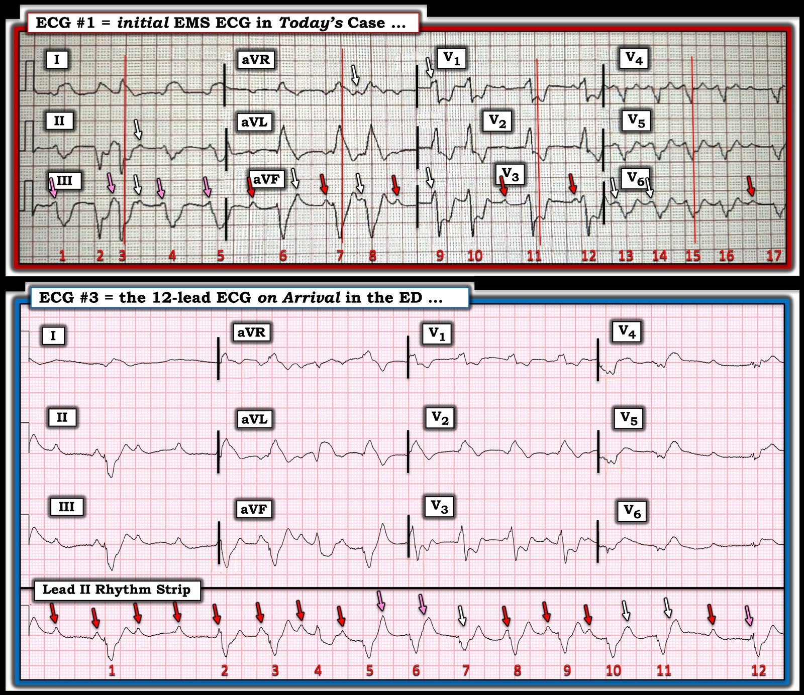